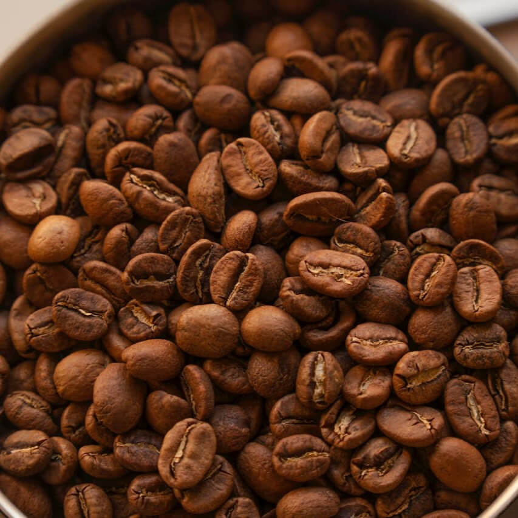
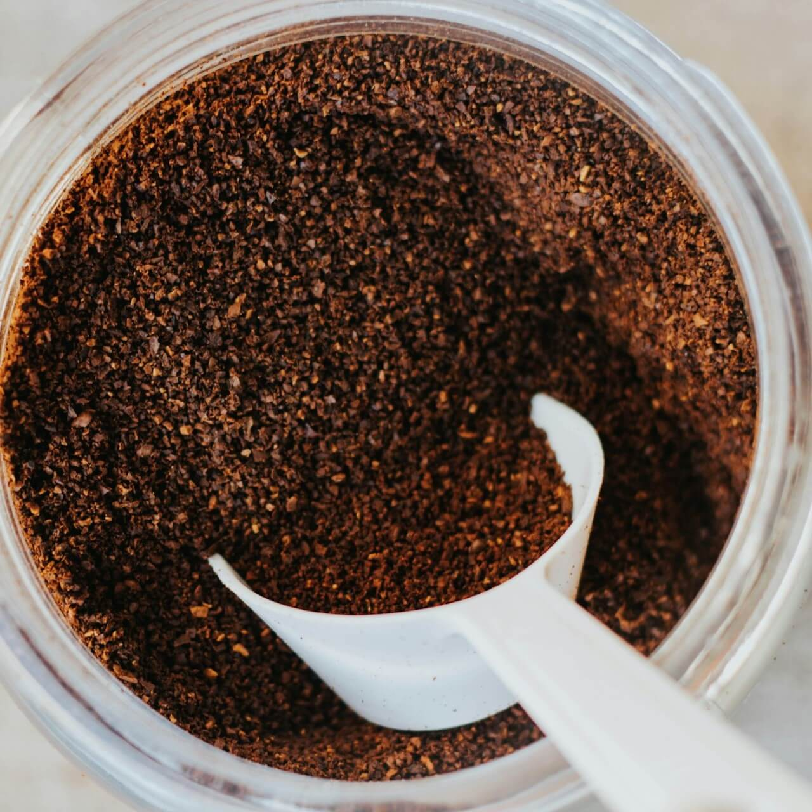
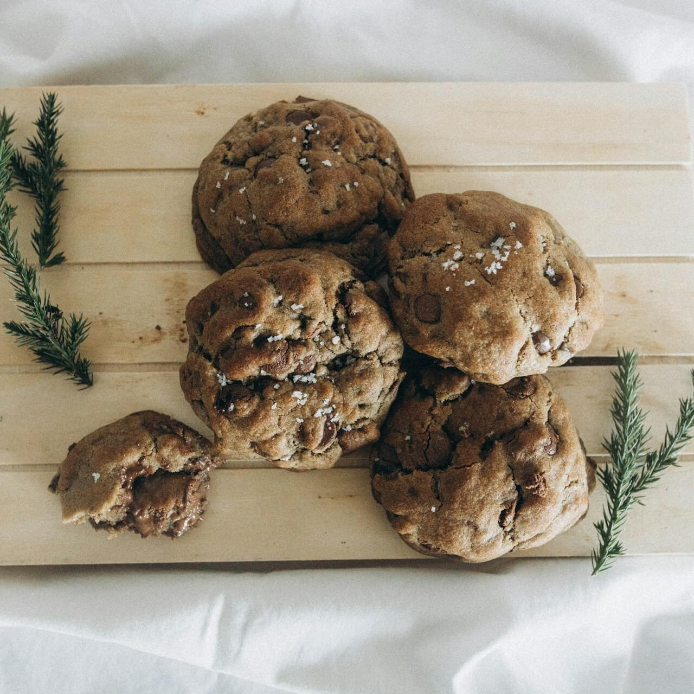
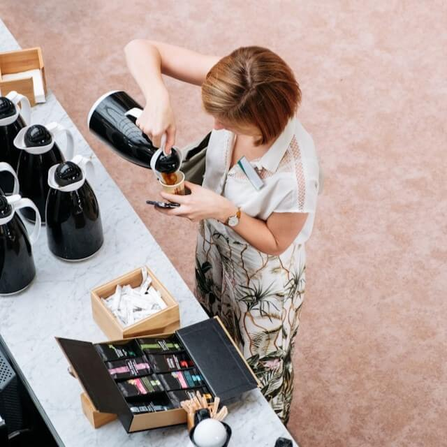

Café Brumas del Valle
Café Brumas del Valle es un espacio dedicado a compartir la pasión por el café de calidad, ofrecemos productos cuidadosamente seleccionados y una experiencia única para los amantes del café.
Misión
Nuestra misión es ofrecer café de alta calidad y productos derivados que resalten los sabores auténticos de nuestra región, brindando a nuestros clientes una experiencia única y satisfactoria en cada taza.
Visión
Ser reconocidos como una marca líder en la cultura del café, destacando por la calidad de nuestros productos y el compromiso con la tradición y innovación.
Nuestros productos
Contamos con una variedad de cafés en grano, molidos y productos especiales elaborados con café, pensados para satisfacer todos los gustos y momentos.

Nuestros cafés en grano conservan todo su aroma y frescura natural, permitiéndote una experiencia auténtica al molerlos en el momento.

El café molido es una opción práctica y lista para preparar, ideal para el consumo diario.

Nuestra línea de productos especiales combina el sabor del café con propuestas creativas como postres y acompañamientos.
Blog
Descubre artículos, consejos y recetas relacionadas con el mundo del café, desde su preparación hasta curiosidades y experiencias que enriquecen cada taza.
Descubre deliciosas recetas a base de café, desde bebidas cremosas hasta postres únicos.
Explora la importancia del café en la vida cotidiana y cómo se ha convertido en una tradición que une a las personas.

Aprende los distintos métodos de preparación y cómo cada uno influye en el sabor y la experiencia del café.